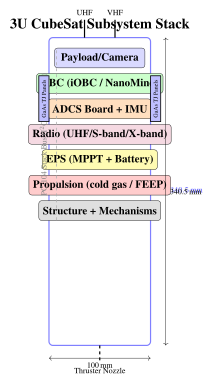

Chapter 24: SmallSats, CubeSats, and the New Space Revolution¶
24.1 Introduction¶
The democratisation of space access is one of the defining technological trends of the early twenty-first century. For the first half of the space age, satellites were the exclusive province of national governments with billion-dollar budgets and decade-long development timescales. The emergence of the CubeSat standard in 1999, combined with the commercialisation of consumer electronics, miniaturisation of subsystems, and dramatic launch cost reductions, has transformed this landscape entirely.
SmallSat classification by mass: femtosat (\(<\)0.1 kg), picosat (0.1–1 kg), nanosat (1–10 kg), microsat (10–100 kg), and minisat (100–500 kg). CubeSats are a subset of picosats and nanosats adhering to the CubeSat Design Specification standard, enabling shared deployers and reducing non-recurring engineering costs through modular standardisation.
The consequences of this democratisation are profound. Universities can now build and launch functional science satellites. Startups with tens of employees and tens of millions of dollars in funding have built constellations providing daily global Earth observation coverage. Nation-states without indigenous launch capability or large aerospace industries can participate in space. The commercial NewSpace ecosystem—spanning launch providers, satellite bus manufacturers, component suppliers, and data analytics companies—now accounts for the majority of satellites launched annually.
This chapter covers the CubeSat standard in detail, examines subsystem technologies enabling capable smallsats, surveys notable commercial missions, and analyses the business models and trends shaping the sector’s future.
24.2 The CubeSat Standard¶
The CubeSat Design Specification (CDS), originally developed by professors Jordi Puig-Suari (Cal Poly San Luis Obispo) and Bob Twiggs (Stanford) in 1999, defines dimensional, mass, and deployment interface standards enabling multiple satellites to share a single launch vehicle secondary payload allocation.
24.2.1 CubeSat Units and Dimensions¶
The fundamental unit is the 1U cube: \(100 \times 100 \times 113.5\) mm. The 3.5 mm tolerance band on each face accommodates deployable components (antennas, solar panels) stowed within the envelope. Table 24.1 lists the standard form factors defined in CDS Rev 14 (2022).
| Form Factor | Dimensions (mm) | Max Mass (kg) | Avg Power (W) | Typical Use | |
|---|---|---|---|---|---|
| 1U | \(100\times100\times113.5\) | 1.33 | 1–2 | Technology demo, sensor | |
| 2U | \(100\times100\times227.0\) | 2.66 | 2–4 | Instruments, comms demo | |
| 3U | \(100\times100\times340.5\) | 4.00 | 3–6 | EO camera, AIS, RO | |
| 6U | \(226.3\times100\times366.0\) | 12.00 | 6–20 | SAR, hyperspectral, propulsion | |
| 12U | \(226.3\times100\times712.8\) | 24.00 | 15–40 | Small observatory, formation |
The PC-104 board standard (90.17 mm \(\times\) 95.89 mm, 104-pin stack connector) governs internal electronics architecture, enabling a modular stack of OBC, EPS, radio, ADCS, and payload boards interconnected by the standard bus. Power rails are 3.3 V, 5 V, and unregulated battery voltage (typically 7.4–8.4 V for 2S Li-Po). The stack architecture simplifies integration and enables substitution of individual boards during development.
24.2.2 Deployment Systems¶
CubeSats are deployed via spring-loaded dispensers that interface to the launch vehicle’s secondary payload adaptor. The Poly-Picosatellite Orbital Deployer (P-POD), developed at Cal Poly, accommodates up to 3U and has been used for \(>\)300 CubeSat deployments. Modern deployers include:
-
NanoRacks NRCSD: 6U capacity, used from ISS Japanese Experiment Module (Kibo) small satellite deployment facility; 40+ CubeSat deployments per year from ISS altitude 400–410 km.
-
ISIPOD/ISIS ISISPACE: Dutch deployer for 3U–12U, used on PSLV and Vega.
-
Exolaunch EXOpod: 6U–16U, compatible with Falcon 9 Transporter rideshare.
-
6U deployers: NanoRacks 6U, SEOPS SHERPA, supporting larger platforms.
24.3 CubeSat Subsystems in Detail¶
24.3.1 Electrical Power System (EPS)¶
The EPS is frequently the most mission-critical subsystem, since power starvation terminates a mission instantly while other failures may be recoverable. Power budget analysis begins with the solar input:
where \(S = 1361\) W/m\(^2\) is the solar constant (total solar irradiance), \(A_{\text{panel}}\) is panel area, \(\eta_{\text{cell}}\) is solar cell efficiency, \(\theta_i\) is the incidence angle from panel normal, and \(\eta_{\text{MPPT}} \approx 0.95\) is the MPPT converter efficiency.
For a 3U CubeSat in 550 km SSO with body-mounted GaAs triple-junction cells:
-
Panel area (4 faces, 30 mm deployed): \(0.03\,\text{m}^2 \times 4 = 0.12\,\text{m}^2\)
-
Cell efficiency: \(\eta_{\text{cell}} = 0.30\) (GaAs TJ, e.g. AzurSpace 3G30C)
-
Mean incidence angle correction: \(\langle\cos\theta_i\rangle \approx 0.6\) averaged over tumble/pointing
-
Eclipse fraction: \(f_e = 0.35\) for 550 km SSO (35% of orbit in shadow)
This illustrates why a 3U CubeSat with body-mounted panels has \(\sim\)10–20 W mean available power—sufficient for communications and low-power instruments but inadequate for high-power radar or high-resolution cameras requiring \(>\)50 W. Deployable solar panel arrays (e.g. 3U with two \(200 \times 300\) mm wings) can raise available power to 30–50 W.
Maximum Power Point Tracking (MPPT) is essential: solar cell I-V characteristics exhibit a peak power point that shifts with illumination intensity and temperature. The perturb-and-observe (P&O) algorithm periodically increments/decrements the operating voltage and observes the power change, converging to the MPP in \(\sim\)10 iterations. More advanced algorithms (Incremental Conductance) achieve faster tracking.
Energy storage: Lithium polymer (Li-Po) cells provide 150–200 Wh/kg energy density with low mass and compliance to CubeSat geometry. Common EPS boards (GomSpace P31u, Clyde Space CEPD) integrate 40–100 Wh batteries. Standard 18650 cylindrical Li-Ion cells (Samsung 30Q, LG MJ1) provide 265–300 Wh/kg but require more careful thermal management. Charge/discharge cycling in LEO (\(\sim\)5,000 cycles/year) demands high cycle-life cells; GaAs TJ cells degrade \(\sim\)2%/year in LEO due to proton displacement damage.
24.3.2 Attitude Determination and Control System (ADCS)¶
CubeSat ADCS capability spans four orders of magnitude in pointing accuracy—from simple detumbling with no operational pointing to \(<\)0.01-class star tracker systems:
Sensors:
-
Magnetometer (e.g. HMC5883L, RM3100): 3-axis magnetic field measurement, 1 mGauss resolution, provides attitude knowledge \(\pm\)5 when combined with IGRF magnetic field model. Mass \(<\)1 g; \(<\)10 mW.
-
Coarse Sun Sensor (CSS): Photo diodes on each face measure incident solar flux, providing Sun vector to \(\pm\)5. TAINI, Bradford Aerospace, or custom silicon photodiode designs.
-
MEMS IMU (e.g. MPU-6050, ADIS16448): 3-axis gyroscope + accelerometer. MPU-6050 gyro bias instability \(\sim\)5/hr; ADIS16448 \(<\)2/hr. Used for rate damping (B-dot) and short-term attitude propagation.
-
Star tracker: Sinclair Interplanetary SST-20 (20 arcsec, 0.15 kg, 0.5 W for 3U missions), Blue Canyon XACT (0.002 3\(\sigma\), 0.37 kg, 1.75 W integrated ADCS unit including reaction wheels). Star trackers require thermal and stray-light baffling.
-
GPS receiver: Position determination for orbit determination and eclipse prediction; multi-antenna GPS provides coarse attitude via differential phase.
Actuators:
-
Magnetorquers (MTQs): Current-driven coils (or torque rods) generate a magnetic dipole moment \(\mathbf{m}\) that interacts with Earth’s field \(\mathbf{B}\): \(\boldsymbol{\tau} = \mathbf{m} \times \mathbf{B}\). For a 3U CubeSat MTQ with \(|\mathbf{m}| = 0.2\) A m\(^2\) and \(|\mathbf{B}| = 40\,\mu\)T at 550 km equatorial orbit, \(|\boldsymbol{\tau}|_{\max} = 8\,\mu\)N m. MTQs cannot generate torque along the field direction, so attitude control is limited to the plane perpendicular to \(\mathbf{B}\). MTQs provide detumbling and coarse pointing (\(\sim\)1–5 steady-state with three-axis control) at low cost (\(<\)50 g, \(<\)200 mW).
-
Reaction wheels (RWs): Spinning wheels store angular momentum; applying motor torque to accelerate/decelerate the wheel produces a reaction torque on the satellite: \(\boldsymbol{\tau}_{\text{sat}} = -I_w\dot{\omega}_w\hat{e}\). GomSpace NanoTorque GSW-600 (1 mN m s, 18 g, 0.1 W idle); Bradford Space CUBE-RW (30 mN m s for 6U). Three or four wheels in pyramid configuration provide 3-axis control.
Attitude control modes:
-
Detumbling (B-dot): MTQ current \(\propto -k\dot{\mathbf{B}}\); damps rotation rate from \(>\)10 /s (deployment tumble) to \(<\)1 /s in 1–3 orbits.
-
Sun-pointing: Maximises solar panel illumination; CSS feedback + MTQ control; \(\pm\)10 accuracy.
-
Nadir-pointing: Earth pointing for cameras; requires gyroscope + magnetometer + orbit model; \(\pm\)1–5 with MTQ-only.
-
Inertial pointing: Star tracker + reaction wheels; \(<\)0.01 achievable with Blue Canyon XACT.
24.3.3 Propulsion Systems¶
CubeSat propulsion has evolved from a curiosity to a routine mission-enabling capability, driven by the need for orbit maintenance, constellation station-keeping, deorbit compliance, and formation flying.
The rocket equation:
where \(I_{sp}\) is specific impulse (s), \(g_0 = 9.81\) m/s\(^2\), \(m_0\) is initial mass, and \(m_f\) is final (post-burn) mass. A 3U CubeSat of 3.5 kg total mass with 0.5 kg propellant achieves:
For \(I_{sp} = 220\) s (green monopropellant): \(\Delta v = 220 \times 9.81 \times 0.154 \approx 332\) m/s—sufficient for significant constellation phasing or deorbit from 800 km.
Table 24.2 summarises available CubeSat propulsion technologies.
| System | \(I_{sp}\) (s) | Thrust | \(\Delta v\) (3U) | Propellant | TRL |
|---|---|---|---|---|---|
| Cold gas (N\(_2\)) | 65–75 | 10–100 mN | 5–20 m/s | N\(_2\), butane | 9 |
| Cold gas (R236fa) | 30–50 | 1–100 mN | 2–15 m/s | Freon | 8 |
| HPGP (LMP-103S) | 220–250 | 0.1–1 N | 100–400 m/s | AF-M315E | 9 |
| RF Ion (BIT-3) | 2100 | 1.15 mN | 600 m/s | Iodine | 7 |
| FEEP (IFM Nano) | 3000–6000 | 0.1–0.4 mN | 500 m/s | Liquid metal | 8 |
| Electrospray (TILE) | 500–1500 | 0.1 mN | 200 m/s | Ionic liquid | 6 |
| Resistojet | 100–200 | 10–200 mN | 50–150 m/s | Water, N\(_2\) | 8 |
Cold gas systems (GomSpace NanoProp 6U, Vacco micro-propulsion module) are simplest and cheapest, using pressurised N\(_2\) or butane stored as liquid. Limited \(I_{sp}\) (65–75 s) restricts \(\Delta v\) to tens of m/s, adequate for attitude control and small orbit corrections.
Green propellant (HPGP): Hydroxylammonium Nitrate (HAN)-based propellants (LMP-103S from Bradford ECAPS, AF-M315E from Aerojet Rocketdyne) are non-toxic high-performing alternatives to hydrazine. \(I_{sp} = 220\)–250 s, \(\sim\)25% higher specific impulse than cold gas, with \(6\times\) higher density than cold gas enabling more propellant mass in the same volume. Green propellant thrusters (Bradford HPGP, Aerojet MPS-130) have flown on multiple missions.
Ion propulsion (Busek BIT-3, Iodine RF ion thruster): \(I_{sp} = 2100\) s from a 1U thruster drawing 13 W. Iodine propellant (solid at room temperature, sublimes to gas on demand) provides higher storage density than xenon and is compatible with CubeSat volumes. The BIT-3 has been selected for several CubeSat and small spacecraft missions.
FEEP (Field Emission Electric Propulsion): The ENPULSION IFM Nano Thruster uses liquid indium metal emitted from a micro-fabricated crown emitter via field emission to produce a focused ion beam. \(I_{sp}\) 3,000–6,000 s at 0.1–0.4 mN thrust, 1.1 kg system mass, enabling very high \(\Delta v\) for small propellant mass. Flown on multiple operational constellations.
Deorbit devices: FCC rules adopted in September 2022 require US-licensed LEO satellites launched after September 2024 to deorbit within 5 years of end-of-mission. For 3U CubeSats without propulsion, drag augmentation devices (ISIS D-Orbit D3, Tethers Unlimited Terminator Tape electrodynamic tether) are mandated if projected orbital lifetime exceeds 5 years. At 550 km, natural drag deorbit takes \(\sim\)5 years; at 650 km, \(\sim\)25 years without augmentation.
24.3.4 Communications¶
CubeSat communications span four frequency bands with dramatically different power–data rate tradeoffs:
UHF/VHF (amateur bands): 435–438 MHz downlink / 145.8–146 MHz uplink. AX.25 protocol inherited from amateur packet radio, 9.6–38.4 kbps. ISIS TRXUV transceiver: 1 W output, \(\sim\)100 mW receive power, fits 0.5U. Link budget for a 3U with monopole antenna (\(\sim\)0 dBi) to a 9 m dish ground station at 600 km:
Free-space path loss at 600 km, 435 MHz:
With ground antenna gain \(G_R = 26\) dBi (9 m dish, \(G = \eta(4\pi A/\lambda^2)\)), \(T_{sys} = 150\) K, \(G/T = 26 - 22 = 4\) dB/K:
Required \(C/N_0\) for 9.6 kbps AX.25 (AFSK, BER \(< 10^{-5}\)): \(\sim\)45 dBHz. Margin: 66 dB—extremely comfortable. This illustrates why even very modest UHF/VHF systems can close links easily, though data rates are inherently limited.
S-band: 2025–2110 MHz uplink, 2200–2290 MHz downlink. Patch antennas at 5 dBi gain enable 0.5–2 Mbps links at 600 km with 1 W transmit power. GomSpace NanoCom U482C, Syrlinks EWC22 are common S-band transceivers. S-band is the standard for science mission telemetry and moderate-resolution EO data downlink.
X-band: 8025–8400 MHz (Earth observation downlink band). Deployable helix or patch arrays at 10–15 dBi gain enable 10–100 Mbps downlinks for high-resolution imagery. Tethers Unlimited SWIFT-XTS achieves 100 Mbps in X-band from a 0.5U module. Critical for commercial EO operators (Planet, Satellogic) requiring rapid downlink of large image archives.
Optical communications: small optical terminals at 1550 nm, offered by several companies, aim to provide data rates well above those of X-band for inter-satellite links and high-bandwidth ground downlinks. Their pointing requirements are far tighter than those of RF links and need attitude control beyond typical CubeSat capability, although small-satellite ADCS units with fine pointing are becoming available.
24.3.5 On-Board Computer (OBC)¶
The OBC executes mission software, manages subsystems via I2C/SPI/CAN/UART buses, stores telemetry and payload data, and manages failure recovery:
Commercial Off-The-Shelf (COTS): Raspberry Pi Compute Module 4 (quad-core ARM Cortex-A72 at 1.5 GHz, up to 8 GB RAM, 16–32 GB eMMC) is extensively used for technology demonstrations and university missions. Single Event Upsets (SEU) in unshielded SRAM are frequent at ISS inclination (\(\sim\)1 upset/day/GB); software memory scrubbing and watchdog reset are essential mitigations.
Heritage flight OBCs: ISIS iOBC (ARM926EJ-S 400 MHz, 64 MB SDRAM, 16 MB flash, EDAC-protected memory, 2 W operating, CAN/I\(^2\)C/UART/SPI, \(-40\) to \(+85\,^\circ\)C). GomSpace NanoMind A3200 (ARM Cortex-M3 48 MHz, 256 KB SRAM, 2 MB flash, ultra-low power \(<\)0.5 W sleep modes). These provide sufficient processing for ADCS algorithms, housekeeping, and downlink formatting.
Radiation-hardened: Aitech S950 (RAD750 derivative, PowerPC 750, 5 MIPS, \(>\)1 Mrad TID tolerance, \(>\)80 MeV cm\(^2\)/mg single-event latch-up immunity). VORAGO VA108M0 (ARM Cortex-M0, inherently radiation-hard bulk CMOS process without SEL susceptibility, 300 krad TID, suitable for Van Allen belt missions). Microchip SAMV71Q21 (ARM Cortex-M7, \(\sim\)100 krad with custom shielding, radiation-tolerant via TMR software).
Radiation effects taxonomy:
-
Total Ionising Dose (TID): Cumulative charge deposition in oxide layers, causing transistor threshold shifts. Commercial CMOS typically \(<\)10 krad; rad-hard \(>\)300 krad.
-
Single Event Upsets (SEU): Bit flip from single heavy ion or proton. Mitigated by Error Correction Code (ECC) DRAM, EDAC on flash, and periodic scrubbing.
-
Single Event Latch-up (SEL): Parasitic thyristor triggering, potentially destructive. Prevented by power cycling or inherently SEL-immune processes.
-
Single Event Functional Interrupt (SEFI): Transient disruption of device operation requiring reset.

24.4 COTS Components and Radiation Testing¶
24.4.1 Radiation Environments¶
Radiation dose rate depends strongly on orbit:
-
ISS (51.6, 400 km): \(\sim\)8 mrad(Si)/day total ionising dose; moderate trapped proton flux.
-
SSO 600 km: \(\sim\)15 mrad(Si)/day; elevated during South Atlantic Anomaly (SAA) passes.
-
800 km SSO: \(\sim\)100 mrad(Si)/day; significant inner Van Allen proton belt contribution.
-
MEO (\(\sim\)2,000 km): 600–800 mrad(Si)/day; peak inner belt proton flux.
For a 3-year mission in SSO at 600 km: TID \(\approx 15 \times 365 \times 3 = 16{,}425\) mrad (Si) \(\approx 16\) krad. Commercial-grade CMOS is typically rated to 10–20 krad, making it borderline without mitigation. With \(\sim\)2 mm aluminium shielding (typical CubeSat structure), dose is attenuated by \(\sim\)2–5\(\times\) for protons, extending survival significantly.
24.4.2 Testing Standards and Methods¶
Radiation testing for CubeSat COTS components employs a risk-based, tailored approach:
Total Ionising Dose (TID) test: Co-60 gamma source irradiation at 50–300 rad(Si)/s test rate. ESCC 22900, MIL-STD-1019 protocols. Test to \(2\times\) expected mission dose. Monitor parametric degradation of leakage current, threshold voltage, gain. Enhanced Low Dose Rate Sensitivity (ELDRS) bipolar effects require additional testing at \(<\)0.01 rad/s for linear ICs.
Single Event Effects (SEE) testing: Heavy ion beams at TRIUMF (Canada), GSI (Germany), HIMAC (Japan), or Texas A&M provide ions from protons to Xe at LET (linear energy transfer) up to 100 MeV cm\(^2\)/mg. Test matrix covers the device’s sensitive LET range. Proton testing at TRIUMF (500 MeV) or PSI (230 MeV) characterises nuclear interaction SEE from space protons.
CubeSat in-orbit heritage: Surveys of CubeSat missions (for example the database maintained by Michael Swartwout) show that mission success rates were low in the early years and improved as the subsystems matured, with university-built missions failing more often than commercial ones. Common failure modes are power system anomalies, communications failures, ADCS failures and deployment failures. Radiation-related failures are underreported but SEU-induced software corruption and latch-up events are documented contributors to communication and OBC anomalies.
24.5 Notable Commercial SmallSat Missions¶
24.5.1 Planet Labs Dove¶
Planet’s Dove 3U CubeSat constellation pioneered commercial daily global imagery from smallsats. Each Dove weighs \(\sim\)4 kg and carries a pushbroom RGB/NIR imager with a 5 MP CMOS sensor achieving 3–4 m GSD. With 180+ satellites in SSO at 475–525 km, Planet achieves daily global coverage, enabling change detection that was previously feasible only with expensive high-resolution systems.
Planet’s business model—not selling images but selling access to a Planet Explorer analytics platform and tasked collections—generates approximately $250 M/year in recurring revenue. The satellite marginal cost of \(\sim\)$1–3 M per 3U bus and payload, with a 5-year replacement cycle, enables a cost structure supporting commercial sustainability.
24.5.2 Spire LEMUR-2¶
Spire’s LEMUR-2 3U constellation (100+ satellites) collects three types of data: GNSS radio occultation (GNSS-RO) for atmospheric refractivity profiles (temperature, humidity, pressure) at \(\sim\)100-m vertical resolution for numerical weather prediction; AIS maritime ship tracking; and ADS-B aviation surveillance. Spire sells Spire Weather API forecasts to aviation, shipping, and commodity markets, demonstrating that CubeSat data can substitute for expensive dedicated meteorological sensors.
24.5.3 Capella Space SAR¶
Capella’s Acadia satellites (microsatellites of roughly 100 kg) operate an X-band SAR at about 9.6 GHz with a deployable mesh reflector antenna. The spotlight mode achieves resolution of well below one metre. Coherent Change Detection (CCD) at centimetre-level detects ground disturbance between repeat passes.
24.5.4 HawkEye 360¶
HawkEye 360 operates clusters of 3 satellites in \(\sim\)15 km formation flying, providing Time Difference of Arrival (TDOA) and Frequency Difference of Arrival (FDOA) geolocation of radio frequency emitters at 137–168 MHz (maritime) and commercial bands. Emitter position accuracy of the order of kilometres enables detection of vessel AIS spoofing, illegal fishing, and maritime domain awareness for defence and intelligence customers.
24.5.5 GHGSat Methane Monitoring¶
GHGSat’s Claire satellites (5–16 kg microsat) use a Fabry-Pérot interferometric spectrometer to image methane and CO\(_2\) concentration at 25 m spatial resolution, enabling attribution of individual emission sources (oil/gas wells, coal mines, landfills, feedlots) to their operators. Methane concentration precision of \(<\)0.5% enables discrimination of “super-emitter” point sources contributing disproportionately to global methane radiative forcing.
24.6 Rideshare and Launch Ecosystem¶
24.6.1 Dedicated Rideshare Missions¶
SpaceX Transporter: Quarterly dedicated rideshare missions to SSO (97 inclination, 525 km) launched by Falcon 9 accommodate 1U CubeSats through ESPA (Evolved Secondary Payload Adapter) ring-class microsats. Prices of the order of several thousand dollars per kilogram to SSO have made it among the least expensive ways to reach a useful orbit. A single Transporter mission has carried more than 100 satellites (the first, in January 2021, carried 143). Payloads are delivered to the main rideshare orbit; orbital transfer to specific inclinations, altitudes, or sun-synchronous slots requires a propulsive upper stage (ION Satellite Carrier, Vigoride, SHERPA).
Rocket Lab Electron: a payload of a few hundred kilograms to LEO, offering dedicated missions for small satellite operators needing a specific orbit impossible to achieve on Transporter. Its Kick Stage enables precise circularisation and altitude adjustment.
ISS Deployment: The NanoRacks Commercial Resupply interface and JAXA Small Satellite Deployment Program deploy 1U–6U CubeSats from the Kibo airlock using the Japanese robotic arm (JRMS). At the ISS altitude of about 400 km the orbital lifetime is typically of the order of a year or two, depending on the satellite and solar activity—appropriate for technology demonstrations and risk-tolerant science missions.
Orbital Transfer Vehicles (OTVs): D-Orbit’s ION Satellite Carrier uses onboard propulsion to deliver each of several smallsats to an individual orbit, removing the constraint that all rideshare passengers share the same orbit.
| Provider | Vehicle | Type | Approach | Frequency |
|---|---|---|---|---|
| SpaceX | Falcon 9 Transporter | rideshare to SSO | shared launch, price per kg | a few times a year |
| Rocket Lab | Electron | small dedicated launcher | dedicated or shared launch | several per year |
| ISRO | PSLV | medium launcher | primary payload with rideshare | occasional |
| D-Orbit and others | orbital transfer vehicles | carried on rideshare launches | individual orbit delivery | with rideshare launches |
| Firefly | Alpha | small dedicated launcher | dedicated launch | occasional |
24.7 New Space Business Models and Trends¶
24.7.1 Constellation Economics¶
Commercial smallsat constellations operate on fundamentally different economics from traditional satellite programmes. A constellation of many small, inexpensive satellites with a short design life (for example Planet’s Dove satellites, built on a 3U CubeSat bus with a camera payload) is replenished continually, so improvements in technology can be introduced with each batch and the loss of a single satellite has little effect. A traditional high-resolution satellite programme, in which a single satellite costing hundreds of millions of dollars must earn enough to justify its capital cost, is a more brittle business model. The financial results of private operators vary and are not quoted here.
24.7.2 Software-Defined Satellites¶
Software-defined payloads enable post-launch reconfiguration of frequency plans, power levels, coverage areas, and waveforms. Examples include:
-
Eutelsat Quantum (2021): the first commercial satellite with a fully reconfigurable payload in which the coverage, frequency and power can be changed in orbit.
-
LEO broadband constellations: phased-array payloads with beam-steering algorithms that can be updated by software.
-
SES-17: Thales Alenia Space satellite with a fully digital payload enabling flexible beam configuration.
24.7.3 Commercial EO Market¶
The commercial Earth observation market is worth several billion dollars a year, by analysts’ estimates, which differ. Key competitive dynamics: Planet provides high-revisit optical imagery with a large fleet of small satellites; Maxar and Airbus Defence and Space operate very high resolution (sub-metre) satellites; Satellogic targets cost-competitive imagery; HawkEye 360 and Spire serve the radio-frequency monitoring niche.
Government demand for commercial imagery, for example through US National Reconnaissance Office commercial imagery programmes, is a significant source of revenue for imaging companies.
24.7.4 Regulatory Sustainability Requirements¶
The FCC’s 5-year deorbit rule (adopted September 2022, applying to satellites launched after September 2024) requires US-licensed LEO satellites to dispose of themselves within 5 years of end of mission, replacing the previous 25-year guideline. Satellites without propulsion at higher altitudes may need drag-augmentation devices to meet it.
ESA’s space debris mitigation requirements (revised in 2023) call for passivation at end of life, disposal of LEO satellites within 5 years of end of mission, and avoidance of intentional fragmentation. ITU’s World Radiocommunication Conference (WRC-23) introduced spectrum and filing reforms for non-geostationary orbit constellations including milestone-based licensing.
The 5-year deorbit rule creates a significant design driver for smallsats above \(\sim\)600 km: either include propulsion for deorbit capability, or plan for natural drag deorbit within 5 years post-EOM. At 650 km, natural deorbit takes \(\sim\)25 years; propulsion or a drag sail is therefore mandatory for operations at this altitude, adding \(\sim\)$50,000–200,000 to marginal satellite cost.
24.7.5 Future Trends¶
Several technical and business trends will define the next decade of smallsat evolution:
-
In-orbit servicing: Northrop Grumman Mission Extension Vehicles (MEV) have demonstrated life-extension docking for GEO satellites; similar concepts for LEO refuelling and component replacement are under development.
-
AI-accelerated edge processing: NVIDIA Jetson-class (radiation-tolerant variants), Intel Myriad, and dedicated space AI chips enable onboard inference for autonomous change detection, target recognition, and data compression—reducing downlink bandwidth requirements by \(\times\)10–100.
-
Swarm intelligence: Distributed aperture synthesis across formation-flying constellations enables virtual large-aperture sensors (synthetic aperture radiometers, interferometric SAR) from many small platforms.
-
Standardised interfaces: JAXA’s HTV Small Satellite Orbital Deployer, NASA CSLI, and commercial aggregators are converging on common mechanical, electrical, and data interfaces reducing non-recurring engineering costs.
-
Commercial space stations: Axiom Space and other commercial stations may replace ISS as a CubeSat deployment platform after 2030.
24.8 Summary¶
The CubeSat standard and the NewSpace commercial ecosystem have democratised access to space, reducing the barrier to entry from billions of dollars and decades of development time to millions of dollars and months. Three quantitative relationships underpin smallsat system design:
The commercial SmallSat revolution has delivered capabilities—daily global imaging, worldwide RF monitoring, real-time ship and aircraft tracking, atmospheric greenhouse gas profiling—that were unimaginable from the small satellite form factor just a decade ago. The next decade will see this ecosystem further mature, with in-orbit servicing, AI-enabled autonomous operations, and proliferated constellations providing sensing and connectivity capabilities rivalling or exceeding traditional large satellite programmes at a fraction of the cost.
The most important insight from the SmallSat revolution is that quantity has a quality all its own: a constellation of 200 small satellites providing daily global coverage creates an intelligence and monitoring capability fundamentally different from—and in many applications superior to—a single large satellite with higher individual resolution but infrequent revisit. Temporal resolution, not spatial resolution, is often the primary determinant of operational utility.